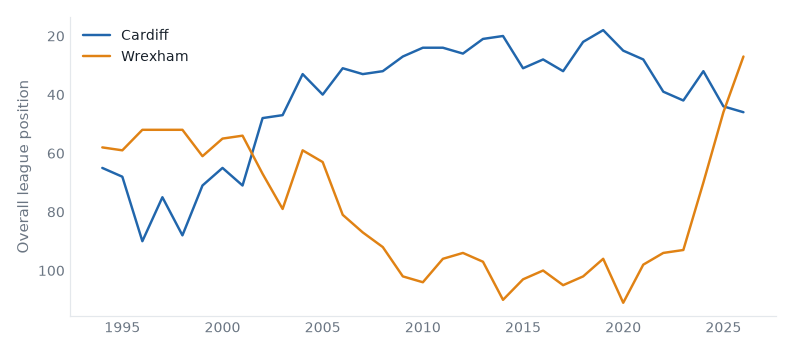

1 fixtures across 1 divisions, week of 17 August 2026.
Cardiff host Wrexham in the Championship on Monday 17 August. Cardiff City belong in the Championship — 61% of their 33 recorded seasons; they sit 2nd with 91 points from 46 games, form LWWWD. Wrexham are, on the balance of their record, a League Two club; they sit 7th with 71 points from 46 games, form DLWWL. They have met 8 times in league play since 1993: Cardiff City 4 wins, Wrexham 2, 2 drawn.

|
|
Generated from football-data.co.uk results, Tiers 1–5, 1993/94–present.